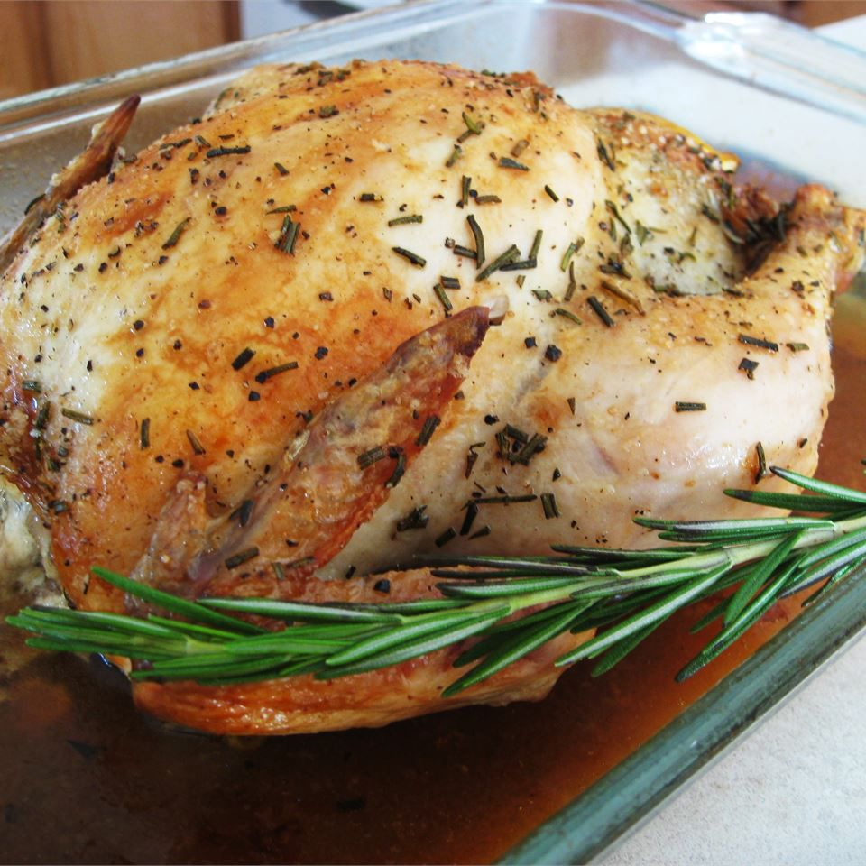

Roast chicken with rosemary

Description
This rosemary roasted chicken is inspired by my time in Italy. When I was in Vicenza at a downtown open-air market, I smelled scrumptious roast chicken from a stand. So, I bought one and saw what they stuffed in the cavity to make it taste so good. I prepare turkey this way, too.
Ingredients
- 1 (3 pound) whole chicken, rinsed
- salt and pepper to taste
- 1 small onion, quartered
- ¼ cup chopped fresh rosemary
Steps
- Preheat the oven to 350 degrees F (175 degrees C).
- Season chicken all over with salt and pepper, including cavity. Stuff cavity with onion and rosemary. Place chicken in a 9x13-inch baking dish or roasting pan.
- Roast in the preheated oven until chicken is no longer pink in the center and the juices run clear, 2 to 2 1/2 hours. An instant-read thermometer inserted into the center of chicken near the bone should read at least 165 degrees F (74 degrees C).